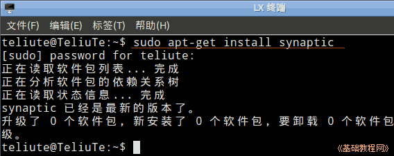
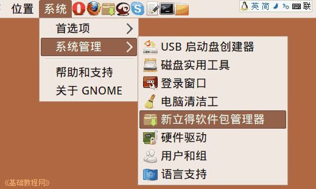
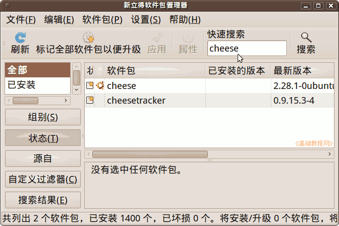
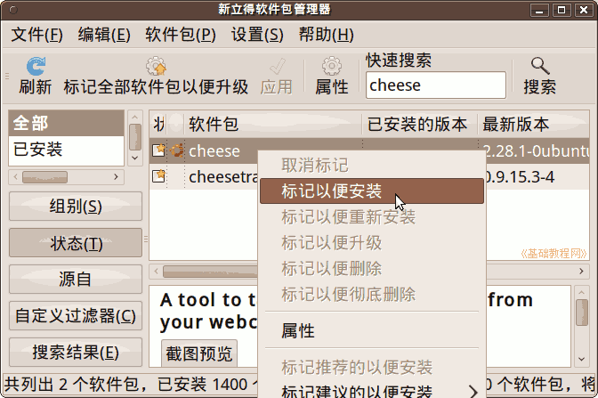
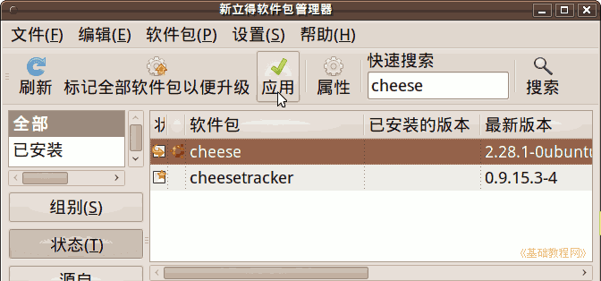
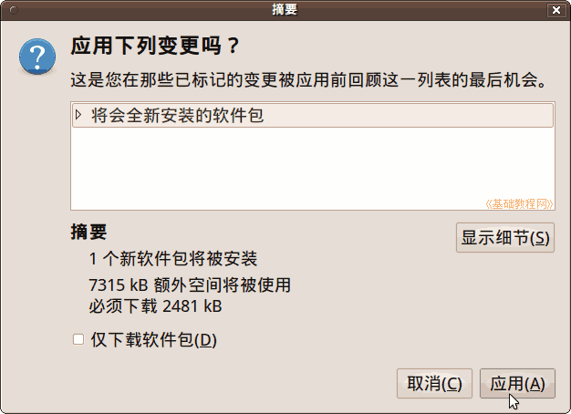
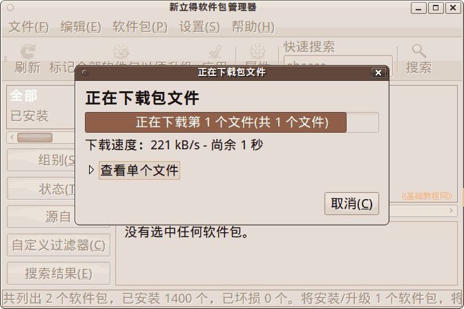
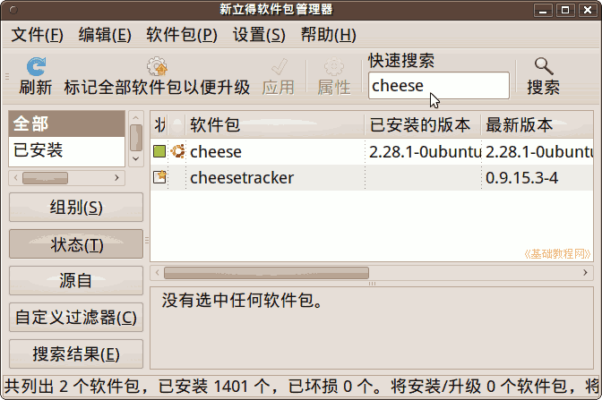
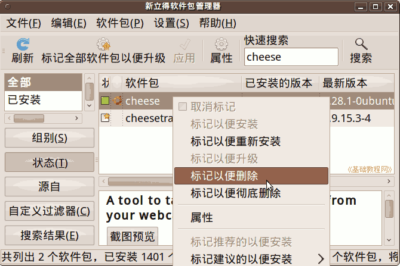
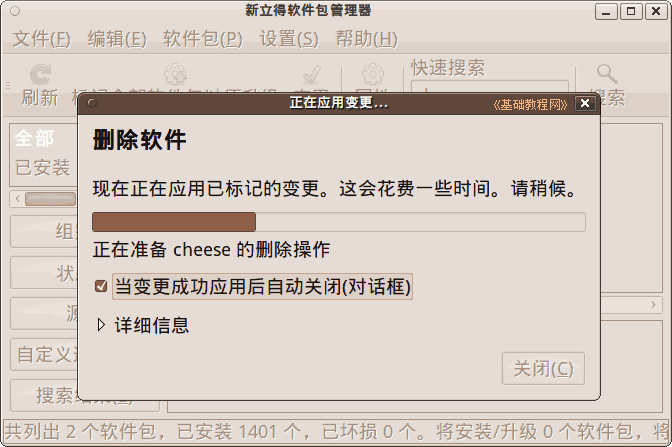

Ubuntu/GNOME 桌面程序指南
作者：TeliuTe 来源：基础教程网
十一、新立得软件包管理器 返回目录 下一课除了用软件中心外，还可以用新立得添加或删除软件；
1、安装软件
1）新版的需要自己安装，进入终端，输入 sudo apt-get install synaptic 按提示输入密码就可以安装上，使用的时候在搜索框中输入 syna 就可以看到，参考：http://teliute.org/linux/TeUbt/lesson15/lesson15.html

点菜单“系统 - 系统管理 - 新立得软件包管理器”，在出来的验证界面输入自己的密码；

2）在打开的窗口中，找到搜索框，输入要安装的软件比如 cheese，显示窗口自动找到软件包；

3）在列表框里选中 cheese 点右键，选“标记以便安装”；

4）再点工具栏上的“应用”按钮，准备安装；

5）出来一个摘要面板，点应用开始安装；


2、卸载软件
1）进入新立得，在搜索框中输入软件包名称，列表中就会显示出来；

2）瞄准软件包名称点右键，选“标记以便删除”；

3）然后点工具栏上的“应用”按钮，就可以卸载了；

4）如果选“标记以便彻底删除”，也会把软件的配置文件删除，一般在自己的主文件中隐藏着；
本节学习了新立得的基础知识，如果你成功地完成了练习，请继续学习下一课内容；
本教程由86团学校TeliuTe制作|著作权所有
基础教程网：http://teliute.org/
美丽的校园……
转载和引用本站内容，请保留版权信息和本站链接。